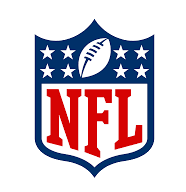

Grupo 51
Historia de la NFL

¿Como se juega?
Reglas
Top 5 Equipos
Mejores jugadores
Contactanos
5 Equipos de la NFL con mas Superbowl
New England Patriots
Pittsburgh Steelers
San Francisco 49ers
Dallas Cowboys